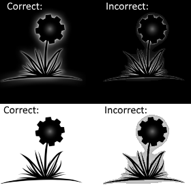
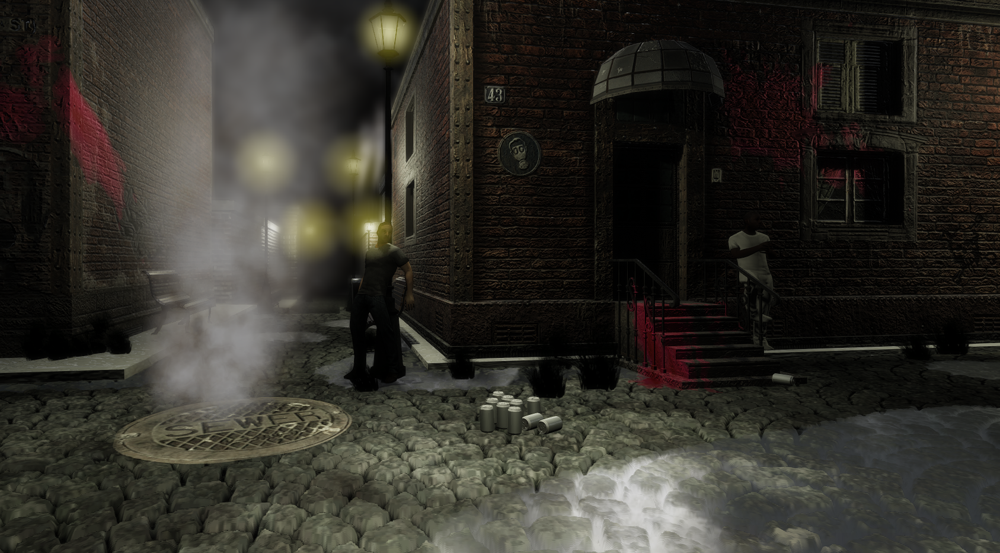

Which blend state for me?
If you are familiar with creating graphics applications, you are probably somewhat familiar with different blending states. If you are like me, then you were not overly confident in using them, and got some basics ones copy-pasted from the web. Maybe got away with simpe alpha blending and additive states, and heard of premultiplied alpha somewhere but didn’t really care as long as it looked decent enough at the time. Surely, there are a lot of much more interesting stuff waiting for you to be implemented. Then later you realize, that something looks off with an alpha blended sprite somewhere. You correct it with some quick fix and forget about it. A week later, you are want to be playing with some particle systems, but there is something wrong with that, the blending doesn’t look good anymore because of a dirty tweak you made earlier. Also, your GUI layer was displaying the wrong color the whole time, but just enough not to notice. There are just so many opportunities for screwing up your blending states without noticing it immediately. Correcting the mistakes can really quickly turn into a big headache. Here I want to give some practical examples and explanations of different use cases, for techniques mainly used in 3D rendering engines.
First thing is rendering alpha blended sprites on top of each other, just to the back buffer immediately. We need a regular alpha blending renderstate for that which does this:
dst.rgb = src.rgb * src.a + dst.rgb * (1 - src.a)Here, dst means the resulting color in the rendertarget (which is now the backbuffer). Src is the color of the sprite which the pixel shader returns. Our colors are just standard 32 bit rgba in the range [0, 1] here. With this, we have successfully calculated a good output color which we can just write as-is to the back buffer. For this, we don’t care what the alpha output is, because no further composition will be happening. Here is the corresponding state description for DirectX 11:
D3D11_RENDER_TARGET_BLEND_DESC desc;
desc.BlendEnable = TRUE;
desc.SrcBlend = D3D11_BLEND_SRC_ALPHA;
desc.DestBlend = D3D11_BLEND_INV_SRC_ALPHA;
desc.BlendOp = D3D11_BLEND_OP_ADD;The tricky part comes when we want to draw our alpha blended sprites to separate layers which will be composited later on. In that case we also have to be careful what alpha value we write out. Take a simple scenario for example, in which you render a sprite with alpha blending to a render target, and later you render your rendertarget to your backbuffer with the same alpha blending. For this, we want to accumulate alpha values, so just add them:
dst.a = src.a + dst.aWhich is equivalent to the following blend state in DirectX 11 (just append to the previous snippet):
dest.SrcBlendAlpha = D3D11_BLEND_ONE;
dest.DestBlendAlpha = D3D11_BLEND_ONE;
dest.BlendOpAlpha = D3D11_BLEND_OP_ADD;Accumulating alpha seems like a good fit for a 32 bit render target, as values will be clamped to one, so opacity will increase with overlapping sprites, but colors won’t be over saturated. Try blending the render target layer now to the back buffer. There will be an error, which could not be obvious at first (which means the worst kind of error). Let me show you:

On the black background, you might even not notice the error at first, but on the white background it becomes apparent at once (in this case, “background” means our backbuffer). For different images, there might be different scenarios where the problem becomes apparent. This could be a challenge to overcome, if you already made a lot of assets, maybe even compensated somehow for the error without addressing the source of the error: the blend operation is not correct anymore! First, we blended the sprite onto the layer, this is still correct, but we blend the layer with the same operation again, so alpha messes with the colors two times here. There is a correct solution to the problem: premultiplied alpha blend operation, which is this:dst.rgb = src.rgb + dst.rgb * (1 - src.a)dst.a = src.a + dst.a
Create it in DX11 like this:
D3D11_RENDER_TARGET_BLEND_DESC desc;
desc.BlendEnable = TRUE;
desc.SrcBlend = D3D11_BLEND_ONE;
desc.DestBlend = D3D11_BLEND_INV_SRC_ALPHA;
desc.BlendOp = D3D11_BLEND_OP_ADD;dest.SrcBlendAlpha = D3D11_BLEND_ONE;
dest.DestBlendAlpha = D3D11_BLEND_ONE;
dest.BlendOpAlpha = D3D11_BLEND_OP_ADD;The only change is that we do not multiply with source alpha any more. Our problem is fixed now, we can keep using our regular alpha blending on sprites, but use premultiplied blending for the layers. Simple right? But do not forget about premultiplied alpha just yet, it can help us out for more problems as well.
I had multiple problems with rendering particle systems to off-screen buffers for soft particles, and can also help with performance if the buffer is of small resolution. One of the problems was the above mentioned faulty alpha blending of particles (particles are the sprites, the layer is the off-screen buffer when mapped to the previous example). The other issue is that I also want to render additive particles to the same render target and I want to blend the whole thing later in a single pass. This is an additive blending state:
dst.rgb = src.rgb * src.a + dst.rgb
dst.a = dst.aWhich corresponds to this state in DX11:
D3D11_RENDER_TARGET_BLEND_DESC desc;
desc.BlendEnable = TRUE;
desc.SrcBlend = D3D11_BLEND_SRC_ALPHA;
desc.DestBlend = D3D11_BLEND_ONE;
desc.BlendOp = D3D11_BLEND_OP_ADD;dest.SrcBlendAlpha = D3D11_BLEND_ZERO;
dest.DestBlendAlpha = D3D11_BLEND_ONE;
dest.BlendOpAlpha = D3D11_BLEND_OP_ADD;Notice that src output doesn’t contribute to alpha, but that is no problem at all, because the premultiplied layer blending will still take the layer color, just adding the full destination color to it. This is only possible if our layer is configured for premultiplied blending, otherwise it would just disappear upon blending. We can also have our particle textures themselves be in premultiplied texture format (where the texture colors are already multiplied by alpha) and blend state, and blending that onto the layer, it just works. When I wasn’t familiar with this, I used a separate render target for regular alpha blended and premultiplied texture format particles and an other one for additive ones, what a waste! We can see that premultiplied blending is already very flexible, so keep that in mind because it can save the day on many occasions. It also makes a huge difference in mipmap generation, see this neat article from Nvidia!
Side note: premultiplied alpha blending was also widely used because it has better blending performance. Think of it as precomputing the alpha blend factor and storing it inside the texture. The performance reasons are probably not so apparent today.
I had an other problem with particle system rendering, because they were rendered to a HDR floating point target. That one doesn’t clamp the alpha values. Consider the case when a particle’s alpha value is bigger than one for whatever reason and blended with regular alpha blending: the term dest.rgb * (1 - src.a) is now of course producing negative values. This is easy to overcome with just saturating the alpha output of the pixel shader, done! The other problem is this: dst.a = src.a + dst.a which can still result in larger than one alpha values, but this will only be a problem later on, when blending the layer as premultiplied alpha. We would need to saturate the (1 - src.a) term in the blending state but we cannot, there is not such state. We have a blend D3D11_BLEND_SRC_ALPHA_SAT value, but there is not for the inverse of it. The workaround that I am using for this is to modify the particle alpha blending state to accumulate alpha a bit differently:
dest.a = src.a + dst.a * (1 - src.a)In DX11 terms:
dest.SrcBlendAlpha = D3D11_BLEND_ONE;
dest.DestBlendAlpha = D3D11_BLEND_INV_SRC_ALPHA;
dest.BlendOpAlpha = D3D11_BLEND_OP_ADD;This accumulation method is probably not perfect, but works really well in practice:

That’s it, I think these are the three most important blending modes, most effects can be achieved with a combination of these. Just always keep an eye on your blend state creation and be very explicit about it, that is the way to avoid many bugs down the road. If you were like me and haven’t paid much attention to these until now, this is the best time to reiterate on this, because tracking down errors associated with this becomes a hard journey later. Thanks for reading!